この授業では、単純機械からエンジンへと学習を進めます。単純機械は力の使い方を助けます。しかし、機械を動かすためにはエネルギーが必要です。エンジンを理解するために、仕事、エネルギー、出力、効率という基本概念を学びます。
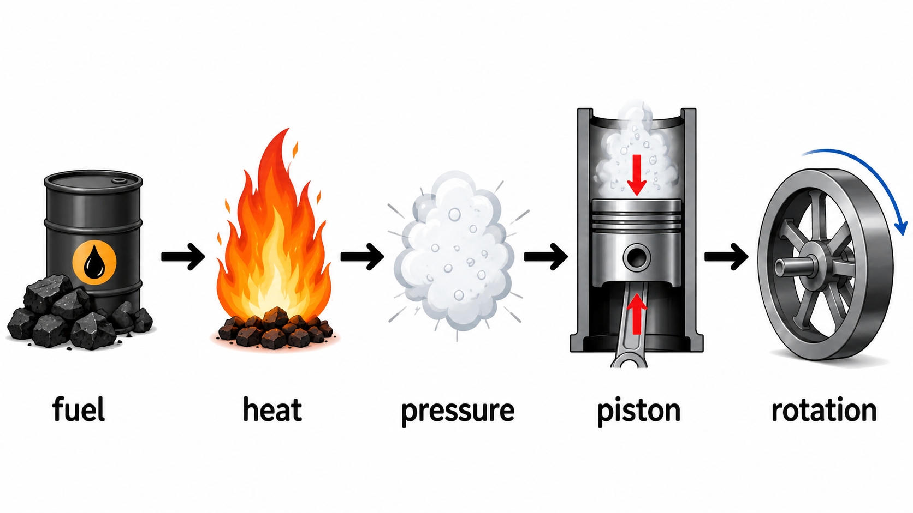
大きな問い
熱と燃料は、どのようにして運動になるのか。
主な流れ
燃料 → 熱 → 圧力 → ピストン → 回転
工学的な考え方
機械はエネルギーを作り出すのではなく、変換する。
授業の流れ
重要語句
この授業で何度も使う基本用語です。
| 用語 | 簡単な意味 |
|---|---|
| work / 仕事 | 力によって物体が移動すること |
| energy / エネルギー | 仕事をする能力 |
| power / 出力 | どれだけ速く仕事をするか |
| efficiency / 効率 | 入力のうち、どれだけが有用な出力になったか |
| pressure / 圧力 | 面積あたりの力 |
| piston / ピストン | シリンダー内で動く壁のような部品 |
| crankshaft / クランクシャフト | 直線運動を回転運動に変える部品 |
1. 仕事
工学では、「仕事」という言葉には特別な意味があります。仕事とは、力によって物体が移動することです。
壁を強く押しても、壁が動かなければ、有用な機械的仕事はしていません。
一方で、病院のベッドを押してベッドが動けば、機械的仕事をしたことになります。
W = 仕事、単位 J（ジュール）
F = 力、単位 N（ニュートン）
s = 距離、単位 m（メートル）
例
看護師が病院のベッドを押します。
力 = 60 N
距離 = 3 m
W = F × s = 60 × 3 = 180 J
練習
力 = 40 N
距離 = 2 m
仕事 = ?
答えを見る
W = F × s = 40 × 2 = 80 J
2. エネルギー
エネルギーとは、仕事をする能力です。
人は食べ物からエネルギーを得ます。エンジンは燃料からエネルギーを得ます。電池は電気エネルギーを蓄えています。動いている部品は機械的エネルギーを持っています。
機械は何もないところからエネルギーを作るわけではありません。機械は、エネルギーの形を変えます。
化学エネルギー → 熱エネルギー → 機械的運動
熱機関で重要な考え方は次の通りです。燃料には化学エネルギーがあります。燃料が燃えると熱が発生します。熱は気体の圧力を作ります。圧力はピストンを動かすことができます。
3. 出力
出力とは、どれだけ速く仕事をするかを表します。
2つの機械が同じ仕事をするとします。一方はゆっくり行い、もう一方は速く行います。速く仕事をする機械の方が出力が大きいと言えます。
P = 出力、単位 W（ワット）
W = 仕事、単位 J（ジュール）
t = 時間、単位 s（秒）
注意：仕事の記号は W です。一方、ワットの単位も W と書きます。紛らわしいですが、物理では普通に使われます。
例
仕事 = 180 J
時間 = 6 s
P = W / t = 180 / 6 = 30 W
練習
仕事 = 200 J
時間 = 10 s
出力 = ?
答えを見る
P = W / t = 200 / 10 = 20 W
4. 効率
完全な機械は存在しません。
機械にエネルギーを入れると、その一部は有用な出力になります。しかし一部は、熱、音、振動、摩擦として失われます。
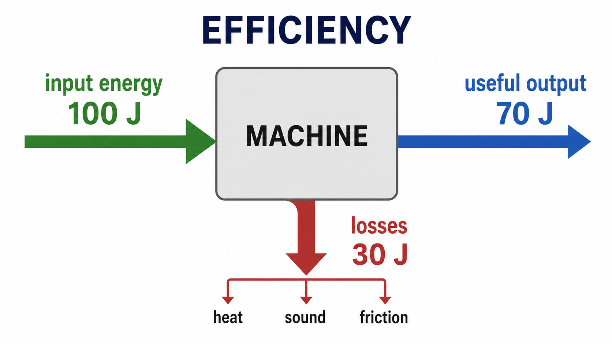
η は効率を表します。効率は通常、百分率で表します。
効率が高いとは、損失が小さいという意味です。効率が低いとは、損失が大きいという意味です。
例
入力エネルギー = 100 J
有用な出力 = 80 J
η = 80 / 100 × 100% = 80%
20 J は失われます。
練習
入力エネルギー = 200 J
有用な出力 = 150 J
効率 = ?
答えを見る
η = 150 / 200 × 100% = 75%
5. 百分率を小数に変える
効率の計算では、百分率を小数に変えることが非常に重要です。
効率を掛け算するときは、まず百分率を小数に変えます。
100で割ります：90 ÷ 100 = 0.90
百分率 → 小数
- 80% = 0.80
- 75% = 0.75
- 60% = 0.60
- 50.4% = 0.504
小数 → 百分率
- 0.72 = 72%
- 0.50 = 50%
- 0.504 = 50.4%
練習
小数に変えなさい：
85% = ?
40% = ?
答えを見る
85% = 0.85
40% = 0.40
6. 多段効率
実際の機械には、多くの部品があります。エネルギーは、モーター、ベルト、ギアボックス、ポンプのように、段階的に伝わります。
各段階で少しずつエネルギーが失われます。小さな損失でも、段数が多いと大きな損失になります。
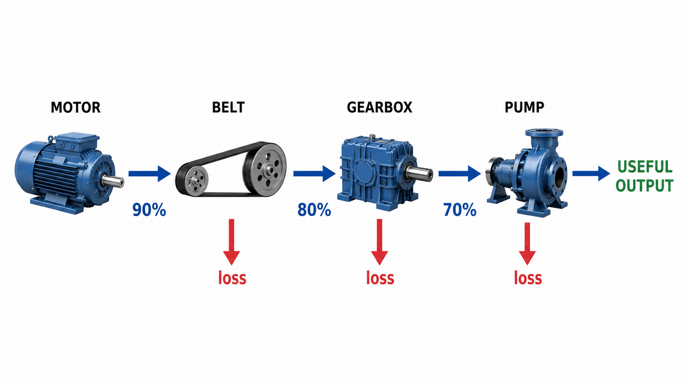
百分率ではなく、小数を使って計算します。
例
ベルト効率 = 90% = 0.90
ギアボックス効率 = 80% = 0.80
ポンプ効率 = 70% = 0.70
ηtotal = 0.90 × 0.80 × 0.70 = 0.504 = 50.4%
入力エネルギーのほぼ半分が失われます。
練習
第1段階の効率 = 90%
第2段階の効率 = 80%
全体の効率 = ?
答えを見る
90% = 0.90
80% = 0.80
0.90 × 0.80 = 0.72 = 72%
7. 有用な出力
効率を使うと、有用な出力も計算できます。
ここでも、百分率を小数に変えてから計算します。
例
入力 = 500 W
全体効率 = 60% = 0.60
有用な出力 = 500 × 0.60 = 300 W
練習
入力 = 100 W
全体効率 = 72%
有用な出力 = ?
答えを見る
72% = 0.72
100 × 0.72 = 72 W
8. 熱と温度
温度と熱は同じではありません。
物体がどれだけ熱いかを表します。
熱い物体から冷たい物体へ移動するエネルギーです。
熱いエンジンは空気へ熱を逃がします。熱い蒸気は金属部品へ熱を伝えます。熱の移動は、すべての熱機関で重要です。
9. 気体粒子と温度
気体は、小さな粒子でできています。
冷たい気体では粒子はゆっくり動きます。熱い気体では粒子は速く動きます。速い粒子は壁に強くぶつかります。その結果、圧力が大きくなります。
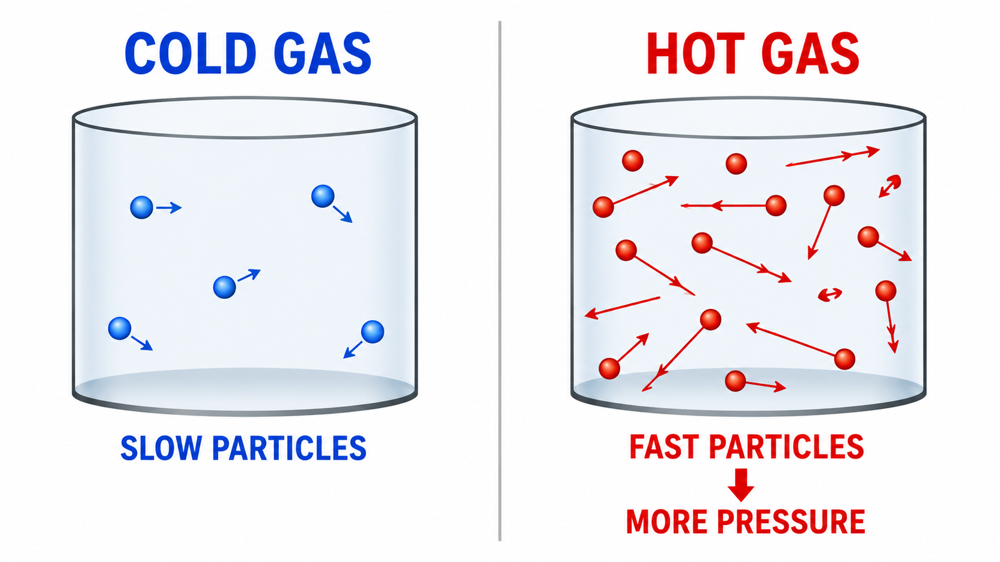
10. 圧力
圧力とは、面積あたりの力です。エンジンでは、圧力がピストンを押すため、非常に重要です。
P = 圧力、単位 Pa（パスカル）
F = 力、単位 N（ニュートン）
A = 面積、単位 m²
エンジンでは、この形が便利です。圧力が力を作ります。
例
圧力 = 100,000 Pa
ピストン面積 = 0.01 m²
F = P × A = 100,000 × 0.01 = 1,000 N
練習
圧力 = 200,000 Pa
ピストン面積 = 0.02 m²
力 = ?
答えを見る
F = P × A = 200,000 × 0.02 = 4,000 N
11. 気体の膨張
気体が熱くなると膨張します。膨張とは、より大きな空間を取ろうとすることです。
シリンダーの中では、気体は自由に広がることができません。そのため、熱い気体はピストンを押します。
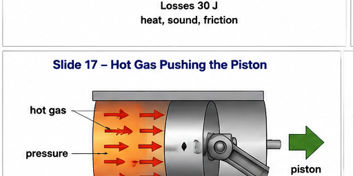
これは多くのエンジンの基本原理です。
12. 蒸気機関の原理
蒸気機関は熱を使います。火が水を熱します。水は蒸気になります。蒸気には圧力があります。蒸気圧がピストンを押します。
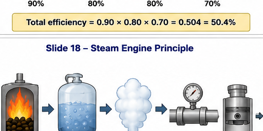
蒸気機関は、熱エネルギーを機械的運動に変換します。
13. ピストンから回転へ
ピストンは直線的に動きます。しかし多くの機械では回転が必要です。
連接棒とクランクシャフトは、直線運動を回転運動に変えます。
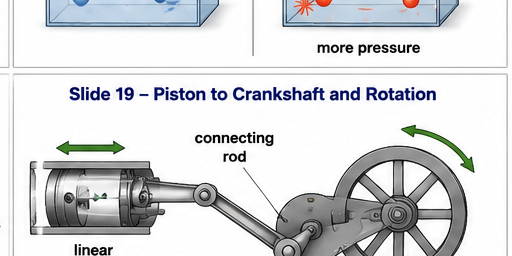
この考え方は、蒸気機関でも内燃機関でも使われます。
14. 蒸気機関のエネルギー変換
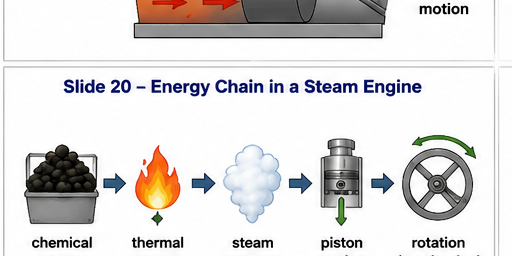
エネルギーの流れを段階的に見てみましょう。
- 燃料には化学エネルギーがあります。
- 燃料が燃えると熱が発生します。
- 熱によって水が蒸気になります。
- 蒸気圧がピストンを押します。
- ピストン運動が回転運動になります。
15. 内燃機関
蒸気機関では、燃焼はシリンダーの外で起こります。内燃機関では、燃料がシリンダーの中で燃えます。
燃料と空気がシリンダーに入ります。燃焼によって熱い気体ができます。熱い気体の圧力がピストンを押します。ピストンはクランクシャフトを回します。
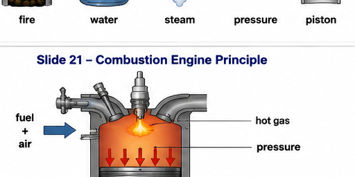
16. 4ストローク
一般的なガソリンエンジンでは、4ストロークのサイクルが使われます。ストロークとは、ピストンの1回の動きです。
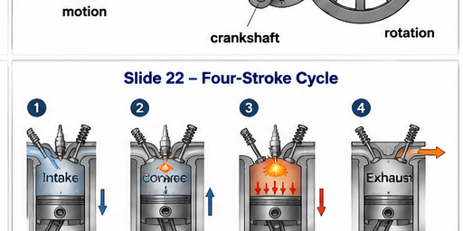
- 吸気：燃料と空気が入る。
- 圧縮：ピストンが燃料と空気を圧縮する。
- 膨張・出力：火花、燃焼、熱い気体がピストンを押す。
- 排気：燃焼後の気体が外へ出る。
このサイクルが、1秒間に何度も繰り返されます。
17. 蒸気機関と内燃機関の比較
蒸気機関
燃焼はシリンダーの外で起こります。
水が蒸気になります。
蒸気がピストンを押します。
内燃機関
燃焼はシリンダーの中で起こります。
燃料がシリンダー内で燃えます。
熱い気体がピストンを押します。
どちらの機関も、圧力、ピストン運動、クランクシャフト回転を使います。
18. ガソリンエンジンとディーゼルエンジン
ガソリンエンジンとディーゼルエンジンは、どちらも内燃機関ですが、燃焼の始まり方が違います。
火花によって燃焼が始まります。
高い圧縮によって燃焼が始まります。
どちらも、燃料の化学エネルギーを機械的運動に変換します。
19. 熱機関の利用例
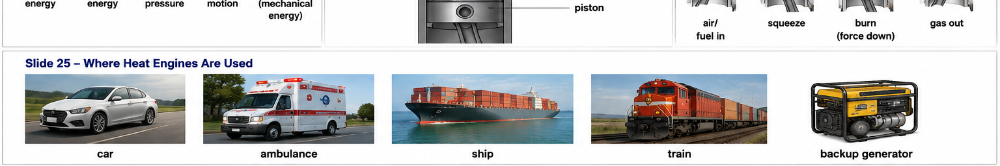
熱機関は、自動車、救急車、船、列車、建設機械、非常用発電機などで使われています。
病院では、電気が常に必要です。停電が起こると危険です。非常用発電機では、燃料エンジンが発電機を回し、電気を作ります。
20. トラブルシューティングの考え方
エンジンが動かないとき、すぐに慌てる必要はありません。まず単純な質問から確認します。
- 燃料はあるか。
- 空気はあるか。
- 点火はあるか。
- 圧縮はあるか。
- 動く部品は動けるか。
- 何かが詰まっていないか、壊れていないか。
これはこれまで学んできた工学的な習慣と同じです。まず見る。まず考える。段階的に確認する。
21. 練習問題
電卓を使ってよいです。ゆっくり計算しましょう。まず公式を書きます。
問題1 — 仕事
F = 50 N
s = 4 m
W = ?
答えを見る
W = F × s = 50 × 4 = 200 J
問題2 — 出力
W = 200 J
t = 10 s
P = ?
答えを見る
P = W / t = 200 / 10 = 20 W
問題3 — 効率
入力エネルギー = 500 J
有用な出力 = 150 J
η = ?
答えを見る
η = 150 / 500 × 100% = 30%
問題4 — 圧力による力
P = 200,000 Pa
A = 0.02 m²
F = ?
答えを見る
F = P × A = 200,000 × 0.02 = 4,000 N
問題5 — 多段効率
第1段階 = 90%
第2段階 = 80%
全体効率 = ?
答えを見る
90% = 0.90
80% = 0.80
ηtotal = 0.90 × 0.80 = 0.72 = 72%
22. まとめ
- 仕事 = 力 × 距離。
- 出力 = 仕事 / 時間。
- 効率は有用な出力の割合を表します。
- 多段機械では、小数にした効率を掛けます。
- 熱は気体の圧力を作ることができます。
- 圧力はピストンを押すことができます。
- クランクシャフトは直線運動を回転運動に変えます。
- 蒸気機関は蒸気圧を使います。
- 内燃機関は熱い気体の圧力を使います。
工学とは、エネルギーを受け取り、制御し、有用な仕事に変えることです。